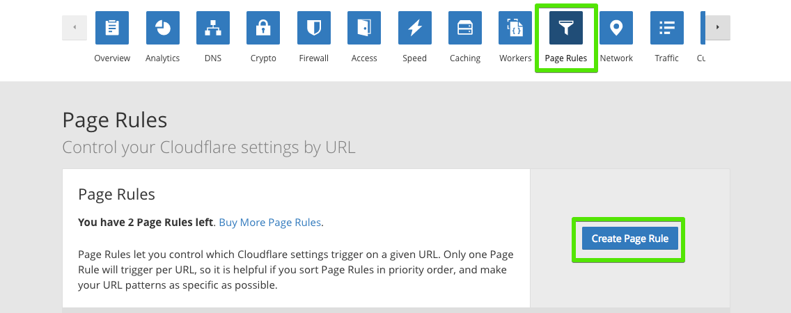

깃헙에 HTTPS 도메인 연결하기
Mar 13, 2018 00:00 · 1583 words · 4 minute read
github에 도메인 https로 연결하기
개인 도메인과 깃헙블로그를 연결하고 https로 접속할 수 있는 방법을 알아보자. 기본 준비 사항은 다음과 같다.
- 도메인 - goDaddy, nameCheap, bluehost,…
- 아이디. github.io로 접속할 수 있는 블로그 사이트
연결 절차는,
- 깃허브에 도메인을 연결한다.
- Cloudflare에 가입한 뒤 도메인을 연결한다.
- 도메인을 구입한 사이트로 가서 Nameserver를 Cloudflare로 연결한다.
- 잠시 후 https로 접속해본다!
인증을 받기 위해서는 인증기관을 거쳐야 하는데 Cloudflare사이트를 통하면 손쉽게 무료로 인증을 받을 수 있다. Cloudflare는 도메인 관리 서비스를 제공 기업으로, https을 위한 기능 외에도 브라우저 캐시 기간 설정 등 사이트 최적화를 위한 다양한 기능들을 제공한다.
step 1. 도메인과 깃헙 페이지를 연결한다
- 깃헙 블로그가 만들어진 repository의 세팅메뉴로 이동한다.
- 하단에 GitHub Pages로 이동해 Custom domain 입력창에 구매한 도메인 주소를 적는다.
- 이때 Enforce HTTPS가 비활성화되는 것을 볼 수 있다. 이는 id.gitHub.io를 사용할 때 선택할 수 있는 옵션으로 개인적으로 구매한 도메인은 따로 인증을 해줘야 한다. 다음 단계를 통해 인증을 해보자.
step 2 . Cloudflare에 가입하기.
 - 링크로 가서 무료 회원가입을 한다. Cloudflare
- 링크로 가서 무료 회원가입을 한다. Cloudflare
- 로그인을 하고 상단에 +Add Site를 선택한다
- 개인도메인 주소를 입력한다.
 - 무료 버전을 선택한다
- 무료 버전을 선택한다
step3. DNS 레코드 세팅하기
- Cloudflare에 가입과 도메인 연결에 성공하면 DNS Records 페이지가 나타난다.

- 총 3개의 레코드를 작성한다.
- 깃헙 서버 주소로 연결할 2개의 A 레코드와 www 접속을 연결해줄 1개의 CNAME 레코드를 입력한다.
- A 레코드 연결시, Name에는 도메인주소를 Value에는 깃헙의 서버 주소를 써준다.(깃헙도메인아닌 IP주소!)
- CNAME레코드 연결시, Name에는 www를 Value에는 구매한 도메인주소를 입력한다.
깃헙 서버 IP주소는 다음과 같다 1. 192.30.252.153 2. 192.30.252.154
참고 : 깃헙 서버 주소는 깃헙 help 사이트에서 찾아 볼 수 있다 - 깃헙 help Setting up an apex domain - User Documentation
apex domain 이라고 하면 root domain 으로 서브 도메인이 없는 베이스 도메인이다.
예를 들어, example.com 은 apex domain 이고 www.apex.com 은 www가 붙으므로 서브 도메인이라고 한다.

step 4. 활성화를 위해 Nameserver 설정하기
 - Continue를 누르면 Nameserver를 변경하라는 이런 비슷한 종류의 메세지가 뜬다.
- 이 두개의 주소를 기억해 두었다가 도메인을 구입한 서비스로 이동해 업데이트를 해주면 된다. (다음 단계)
- Continue를 누르면 Nameserver를 변경하라는 이런 비슷한 종류의 메세지가 뜬다.
- 이 두개의 주소를 기억해 두었다가 도메인을 구입한 서비스로 이동해 업데이트를 해주면 된다. (다음 단계)
step 5. 네임서버를 업데이트한다.
Cloudflare에 연결이 끝나면, 이제 도메인을 구입한 서비스 사이트(goDaddy, Namecheap등)로 가서 Nameserver를 Cloudflare로 업데이트 해주는 작업이 필요하다.

- 도메인 세팅 페이지로 이동해
Nameserver세팅하는 곳을 찾는다. 여기서Custom DNS를 선택한다. - 이렇게 하면 다른 곳에서 구매한 도메인도 Cloudflare에서 관리할 수 있게 된다.
- 잠시 후 Cloudflare로 이동해 확인 해보면 status가 active로 바뀐것을 확인할 수 있다. (시간이 걸릴 수도 있음)
step 6. Cloudflare에서 각종 설정하기
이제 https로의 연결이 잘 되었으면 redirect해주는 기능을 설정해보자. Cloudflare에서는 http로 접속했을 경우 자동으로 https로 연결해 주는 기능을 제공한다.

- Cloudflare에서 Page Rules메뉴로 이동한다.
- Create Page Rule를 선택해 새로운 룰을 만들어 보자.
 -
- 도메인 주소/* 를 입력해 모든 페이지에서 동작하게 할 수 있다.
- 세팅에서 Always Use HTTPS를 선택한다.
일부 인증서의 경우 expiration date가 있어서 미리미리 갱신을 해줘야 하는데 아직까지 알아본 바에 의하면 Cloudflare에서는 자동으로 알아서 갱신을 제공해주는 것 같다. Cloudflare에 보면 무료 버전으로도 일반 블로그에서 관리하기엔 충분한 다양한 서비스들을 제공하니 https 인증 목적 외에도 사용하기 좋은 서비스인 것 같다.
나에게 도움을 준 사이트